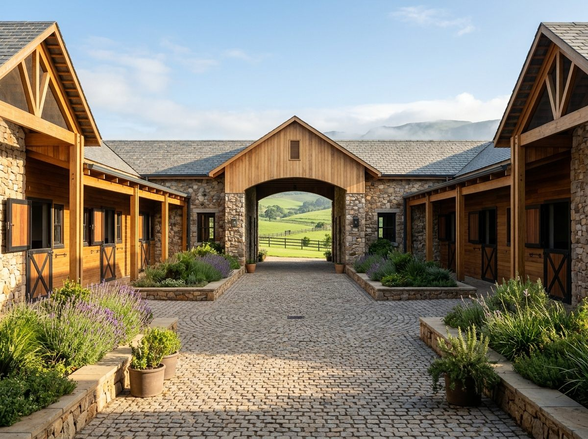

Equestrian, Orchards & Barn Craft
A working Midlands landscape where horses, harvests, and honest architecture belong together.
Explore how families, riders, and architects experience Oakhaven across the seasons.

First Farmstead Journey
Semigrating Family Childhood
Give your children real space to roam, build treehouses, and learn the seasons while keeping top schools minutes away.
Frost melts off the Kikuyu grass as children pull on gumboots to check the chicken coop before the short, tree-lined drive to school.
Fourteen kilometres of car-free farm lanes, bass dams, and shaded pecan groves turn the entire estate into an everyday outdoor classroom.
Neighbours gather each May for the autumn pecan harvest, filling hessian sacks before sharing soup and warm bread at the barn.
Fibre internet to every homestead, reliable nearby medical care, and active school lift clubs make semigration smooth from week one.
Summer rains bring emerald pastures and afternoon dam swims; crisp winter mornings call for wood stoves and warm fleece jackets.
“Our kids haven't asked for a screen on a Saturday morning since the week we moved in.”

Second Farmstead Journey
Equestrian & Paddock Living
Ride directly from your own paddock gate onto fourteen kilometres of uninterrupted Midlands bridle trails.
Horses wait at timber post-and-rail fences in the soft morning light while grooms prepare the main barn and sand arenas.
An eighteen-stall timber and fieldstone stable complex, full-size dressage arena, grass jumping paddock, and hot-water wash bays anchor the riding community.
Saturday morning outrides climb the mistbelt ridge in small groups before ending with hot coffee outside the tack room.
Choose between private home paddocks on your smallholding, full livery at the central barn, or holiday care whenever your family travels.
Rich summer Kikuyu grazing gives way to golden winter pastures supplemented with locally baled Midlands eragrostis hay.
“Leaving for a week's work trip is effortless because the stable master checks our horses like his own.”
Third Farmstead Journey
Working Orchards & Barn Craft
Build a timeless Midlands barn homestead surrounded by mature pecan and citrus rows that earn their keep.
Long verandahs catch the first east light over citrus blossom while stone chimneys hold the warmth of last night's hearth.
Homesteads follow simple gabled barn forms using hand-packed Midlands fieldstone, charcoal corrugated iron roofs, and generous exposed timber.
Friends linger around outdoor fire pits and kitchen harvest tables supplied with orchard lemons, pecans, and kitchen-garden herbs.
Our Architectural Review Desk works directly with your chosen architect from early sketches so approvals stay clear, collaborative, and fast.
Spring fills the air with orange blossom; autumn delivers heavy pecan crops and clear golden afternoons across the valley.
“The design guidelines never felt restrictive; they simply ensured every neighbour built something worthy of the hills.”

Barn-Style Building Guidelines
Honest agricultural forms, never suburban plaster boxes.
Every home at Oakhaven honors the enduring architecture of working KwaZulu-Natal Midlands farms.
Guideline 01
Natural Material Palette
Locally quarried Midlands fieldstone, bagged natural masonry in muted earth tones, and weathered timber cladding or screens.
Guideline 02
Simple Gabled Barn Roofs
Charcoal corrugated iron pitched roofs with clean overhangs, generous timber verandahs, and concealed rainwater gutters.
Guideline 03
Open Rural Boundaries
Timber post-and-rail or discreet farm wire fencing keeps sightlines open across paddocks. Solid suburban boundary walls and glossy finishes are not permitted.

Guideline 04
Generous Footprint Restraint
Single-storey or lofted barn clusters preserve the natural ridgeline and leave over eighty percent of each smallholding open to pasture, orchard, or garden.
Shared Farm Facilities
Cared for daily by a dedicated resident farm team.
- Eighteen-stall timber and stone stable barn with tack room, feed store, and resident stable master
- All-weather dressage arena, lunging ring, and grass schooling paddock
- Fourteen kilometres of maintained bridle paths and walking trails
- Forty-two hectares of working pecan and citrus orchards with annual resident harvest shares